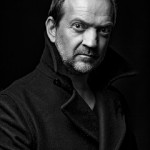

Frilansprisen 2015 - Frilansskuespillernes egen pris!
- Kategori:
- Åpne arrangementer
Åpne arrangementer
Åpent for alle som jobber innen kulturfeltet, inkludert studenter. - Dato:
- 28.01.2016 til 28.01.2016
- Start kl :
- 19:30
- Slutt kl :
- 23:59
- Adresse:
- Cafeteatret, Hollendergata 8, Oslo
{kind=link}
- Frilansskuespillernes egen pris!
28.januar lager vi en kveld med bobler, underholdning og prisutdeling på Cafeteatret/Nordic Black Theatre. En kveld til heder og ære for landets frilansskuespillere, en kveld der kolleger møtes. Hjertelig velkommen!
Mer informasjon om programmet og påmelding her: http://bit.ly/Frilansprisutdeling
Om Frilansprisen
Frilansprisen skal hedre en frilansskuespiller som i løpet av det siste året og/eller i sin foreløpige karriere har jobbet målbevisst og variert i sitt skuespillerarbeid, har vist vilje til å videreutvikle seg og fornye sine kunnskaper, har bidratt positivt til frilansmiljøet og som gjerne har gjort en innsats utenom det vanlige for å fremme frilansskuespilleres kår og miljø i Norge.
Prisen ble lansert i 2010, og deles ut årlig av Norsk Skuespillersenter. Vinneren velges av en jury bestående av fjorårets vinner Cici Henriksen, leder av Norsk Skuespillerforbund Knut Alfsen og kunstnerisk leder for Norsk Skuespillersenter Linn Meyer Kongshavn. Prisen består av et stipend på kr. 10 000,- samt et diplom spesialdesignet av Linn Ramm Østgaard.
De nominerte
I forbindelse med vår nasjonale nominasjonsutlysning, fikk vi inn en rekke gode og velfunderte navn. Og det er med stor begeistring at vi her kan presentere årets tre finalister! De kommer alle til utdelingen av prisen, der selve vinneren blir annonsert.
 Irene Ahnéll
Irene Ahnéll
Skuespiller, dramatiker, tekstforfatter, produsent og regissør. Irene er leder for Krabatene, et av Bergens mest etablerte teaterkompanier som feiret 20 års jubileum i 2014 med storsatsingen "Little Shop of Horrors". Krabatene har hovedfokus på teater for barn og unge, og i løpet av disse årene har de stått for 29 (stort sett) egenproduserte oppsetninger. Kompaniet sysselsetter 15 - 20 frilansere hvert år, og har spilt ca. 4000 forestillinger for flere hundre tusen publikummere. Hun har bl.a. skrevet store musikaler som suksessene "Kaptein Knurr og Mareminemysteriet" og "Mysteriet i Pepperkakebyen". Ahnéll har også vært talerør for frilansernes kår generelt, både i pressen og innad i teatermiljøet.
 Anne Marit Sæther
Anne Marit Sæther
Skuespiller og instruktør.
Født i 1957 i Trondheim. Sammen med Gilles Berger dannet hun Cirka Teater i 1984. Hun har vært manusforfatter, regissør og/eller skuespiller i alle Cirka Teaters produksjoner i tillegg til å ta oppdrag som regissør og skuespiller for andre grupper/institusjonsteater. Dette har resultert i over 40 teaterproduksjoner av ulikt omfang; fra store utendørs evenementer, hovedsceneproduksjoner med mange involverte til intime forestillinger for barn og unge som gjennom Den kulturelle skolesekken har møtt tusenvis av barn i hele landet. Anne Marit Sæther har i stor grad kombinert sine prosjekter med undervisning og opplæring i både grunnskole og høyere utdanning og er ofte invitert til å holde foredrag og kurs. (Fotograf: Kjell A. Olsen)
Gard Bjørnstjerne Eidsvold
{kind=link}
Skuespiller siden 1988 og deltatt i nærmere førti teaterproduksjoner og femti filmer i store og mindre roller. Han har vært knyttet til Teater Ibsen, Agder Teater, Oslo Nye Teater, Det Norske Teatret og Nationaltheatret fra 1998 til 2009. Eidsvold stiftet i 1996 Oslo Moderne Teater, som har produsert seks teaterproduksjoner. Eidsvold vant i 1998 Heddaprisen for beste forestilling sammen med Yngve Sundvor for Sult i et samarbeid mellom Nationaltheatret og Oslo Moderne Teater. Eidsvold er også regissør, scenograf og manusforfatter. Han vant Gullruten som beste skuespiller i 2010. I dag er han administrativ leder, produsent og skuespiller ved Statsteatret, som har produsert fem forestillinger til nå. Han er også ansatt hos Skuespiller- og danseralliansen. (Foto: Killian Munch)
Om Programmet
Vi ønsker å vise bredden i feltet frilansskuespillere jobber i. Få med deg Det Andre Teatret, Anne Kokkinn, Sofia Knudsen Estifanos & beatboxeren Beatur, Hilde Louise Asbjørnsen og Jannike Kruse! Og alt dette akkompagnert av kveldens (skuespiller-)husband: FLUFFERS!
Følg med her for oppdatert informasjon om programmet.
Vi takker Nordic Black Theatre / Caféteatret for samarbeidet og deres bidrag til denne festkvelden.
I samarbeid med
{kind=link}